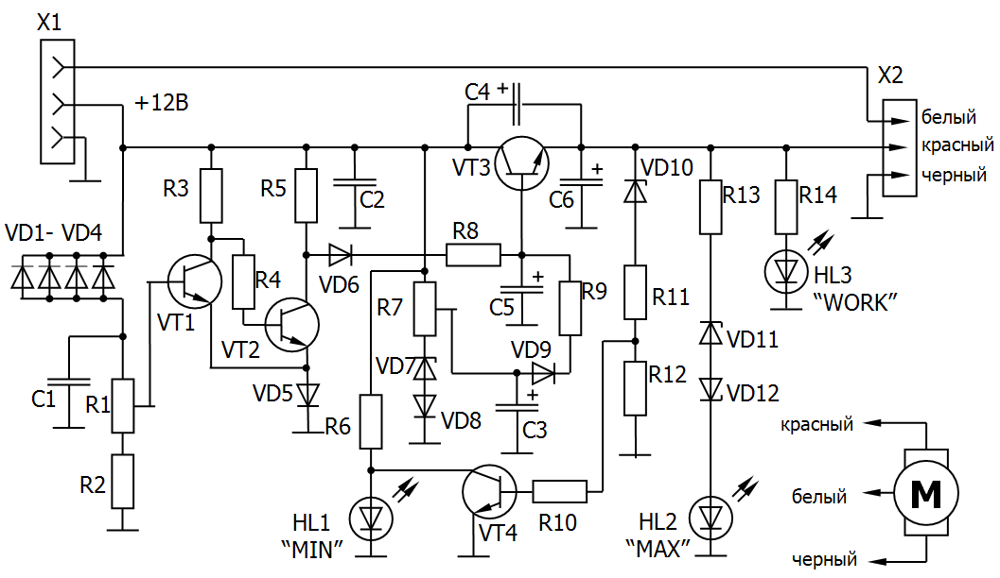

Регулятор скорости вентилятора-2
После включения на вентиляторы начинает подаваться напряжение около 6 В (с кратковременным повышением в самый начальный момент до 12 В - для устойчивого запуска), а затем при повышении температуры оно повысится до максимального значения 12 В. Когда температура понизится, напряжение на выходе регулятора снова уменьшится до 6 В и вентилятора практически не будет слышно. Нижний порог напряжения (6 В) можно изменить в зависимости от шумности вентилятора. Поэтому сочетаем подстроечный резистор (в регуляторе напряжения, подаваемого на вентилятор, он регулирует начальную скорость вращения ротора) с электронным переключателем режимов.

Таблица 1
| Обозначение | Наименование | Номинал | Кол-во | Примечание |
|---|---|---|---|---|
| C1, C2 | Конденсатор | 0,01 мкФ | 2 | |
| C3, C5, C6 | Конденсатор | 1 мкФ x 50 B | 3 | |
| C4 | Конденсатор | 1000 мкФ x 16 B | 1 | |
| HL1, HL2, HL3, | Светодиод | АЛ307 | 3 | |
| R1 | Резистор подстроечный | 47 кОм | 1 | |
| R2 | Резистор постоянный | 300 кОм | 1 | |
| R3 | Резистор постоянный | 3,3 кОм | 1 | |
| R4 | Резистор постоянный | 240 Ом | 1 | |
| R5 | Резистор постоянный | 15 кОм | 1 | |
| R7 | Резистор подстроечный | 1 кОм | 1 | |
| R6, R14 | Резистор постоянный | 2,4 кОм | 2 | |
| R8, R13 | Резистор постоянный | 100 Ом | 2 | |
| R9 | Резистор постоянный | 1,5 кОм | 1 | |
| R10 | Резистор постоянный | 3,6 кОм | 2 | |
| R11, R12 | Резистор постоянный | 1 кОм | 2 | |
| VD1-VD4 | Диод | Д9Б | 4 | |
| VD5, VD6, VD8, VD9 | Диод | КД105Б | 4 | |
| VD7, VD11, VD12 | Стабилитрон | КС168А |
3 | |
| VD10 | Стабилитрон | КС156А | 1 | |
| VT1, VT2, VT4 | Транзистор биполярный | КТ315Б | 3 | |
| VT3 | Транзистор биполярный | КТ815 | 1 | КТ817 |
Первая часть устройства - "термопереключатель" для вентилятора на транзисторах VT1 и VТ2. Термодатчик - четыре или пять параллельно соединенных германиевых диодов типа Д9Б в обратном включении. В исходном состоянии сопротивление термодатчика велико, транзистор VT1 закрыт, VТ2 открыт и напряжение на его коллекторе мало. Диод VD6 заперт обратным напряжением, ток через его цепь не протекает. При повышении температуры сопротивление термодатчика понижается (возрастает обратный ток диодов), и при дальнейшем возрастании напряжения на базе транзистор VT1 открывается, VТ2 закрывается. Напряжение на коллекторе VТ2 увеличивается до 12 В. Через открывшийся диод VD6 и резистор R8 начинает протекать ток, сильнее открывая транзистор VTЗ и повышая напряжение на выходе регулятора до максимума. Резистором R1 устанавливают порог начала срабатывания схемы.
Вторая часть схемы - регулятор напряжения. В исходном состоянии напряжение на базу транзистора подается со стабилитрона VD7 и диода VD8. Напряжение на выходе регулятора напряжения будет примерно 6 В (если движок подстроечного резистора находится в самом нижнем положении по схеме). Пока на выходе триггера уровень напряжения низкий, диод VD6 закрыт, напряжение на базу транзистора VТЗ поступает через открытый диод VD9 и резистор R9. Когда температура воздуха внутри корпуса возрастет и сработает триггер Шмидта, напряжение на базу регулирующего транзистора будет поступать уже с выхода "переключателя" через цепочку VD6R8. Таким образом, напряжение на выходе регулятора будет меняться при достижении пороговой температуры от +6 до +11,5 В (в зависимости от типа используемого в регуляторе транзистора, максимальное выходное напряжение может быть от 11 до 11,5 В).
Питание на схему подается через разъем Х1, подключаемый к штырькам на материнской плате. Разъем Х2 (со штырями) для подключения к вентилятору также можно изготовить, разобрав нерабочий аппарат. Желательно при этом соблюдать цветовую маркировку: белый - провод от таходатчика, красный - "+" питания, черный -"общий".
Подстроечный резистор на 47 кОм можно заменить на другой, большего сопротивления (изменив при этом величину сопротивления резистора R2). Подстроечный резистор во второй части схемы можно заменить переменным и прикрепить его к крышке, рядом с платой. Тогда обороты вентиляторов можно будет регулировать вручную, а при повышении температуры внутрикорпусная вентиляция заработает в полную силу независимо от положения ручки регулятора.
Германиевые диоды имеют сильную зависимость обратного тока от температуры, именно эта их особенность и используется в данной схеме. Чем меньше они по размерам, тем быстрее схема будет реагировать на повышение температуры внутри корпуса. Количество диодов можно изменять, но тогда придется изменять величины последовательно соединенных с ними сопротивлений, если датчик не будет срабатывать при заданной температуре.
При настройке устройства подогревать диоды можно паяльником, ненадолго помещая его жало рядом с корпусами диодов (но не касаясь их!). Окончательную регулировку температурного порога нужно производить после установки датчика в корпус, при этом боковые стенки корпуса должны быть закрыты (при настройке крышку отсека с укрепленной на ней платой не вдвигайте на место полностью, чтобы оставалась возможность покрутить подстроечный резистор).
Регулирующий транзистор может быть типа КТ815, КТ817 с любым буквенным индексом. Его лучше прикрутить к металлической пластинке толщиной 2-3 мм и площадью 5-6 см2, при этом нельзя допускать соприкосновения этого радиатора с корпусом компьютера или "общим" проводом схемы. Величину напряжения на выходе регулятора в режиме "полного газа" устанавливают подбором величины сопротивления резистора R8 (его можно убрать совсем). Маломощные транзисторы - любые кремниевые, но, возможно, в этом случае придется подбирать регулировочные сопротивления.
НL1 - индикатор минимального напряжения на выходе регулятора (красный светодиод), НL2 - индикатор максимального напряжения (зеленый светодиод), НL3 - индикатор исправности регулятора (желтый светодиод) (он должен все время светиться во время работы при исправном регуляторе напряжения).
Для монтажа данного устройства хорошо подходит крышка трехдюймового или пятидюймового отсека. Печатную плату с деталями можно изнутри привинтить к нижней кромке крышки. С наружной стороны крышки рядом со светодиодами можно сделать какие-нибудь условные обозначения.
Датчик необходимо разместить в верхней части корпуса, причем так, чтобы избежать замыкания его выводов с металлической поверхностью и попадания его под струю воздуха от вентилятора.
Источники
nauchebe.net - Автоматический регулятор скорости вращения корпусных кулеров